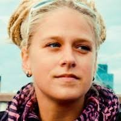

O mně

Jmenuji se Katka, žiji a pracuji v Praze.
Vystudovala jsem ekonomii a marketing na Západočeské univerzitě v Plzni a následně na VŠE v Praze.
Po promoci jsem začala pracovat v reklamní agentuře Ogilvy&Mather.
Měla jsem možnost pracovat na mnoha zajímavých zakázkách, s malými i velkými klienty, a naučit se vést kampaň od A do Z.
Mezi nejzajímavějšího klienta pro mě patřila AirBank. Bylo skvělé být součástí týmu, který byl u vzniku celé koncepce i následné kampaně.
S nabytými zkušenostmi jsem se přesunula do menší reklamní agentury Loosers.
Po Loosers jsem si chtěla svou práci vyzkoušet i ze strany klienta a měla jsem štěstí, dostala jsem se do Vodafonu.
Mojí zatím poslední pracovní zastávkou je Potex, který se zabývá sběrem a recyklací textilu. Bylo velkou výzvou dostat tuto společnost do povědomí lidí a vybudovat ji pozitivní PR. Myslím, že se nám to zatím daří. Zároveň je před námi ještě dlouhá cesta.
Současný projekt

V současné době pracuji 7 dní v týdnu, 24 hodin denně.
Působím jako projektový a často i krizový manažer.
Time management je mojí silnou stránkou.
Vyznám se i v oblasti lidských vztahů.
Gastronomie mi není cizí, mám velmi náročné strávníky.
Jsem pečlivá a připravená se neustále učit a reagovat na nové požadavky.
Kam dál?
Mám ráda svou práci, která se točí kolem reklamy a marketingu. Cítím ale, že bych se ráda posunula dál a naučila se něco nového. Doufám, že mi v tom workshopy a kurzy od Czechitas pomohou.